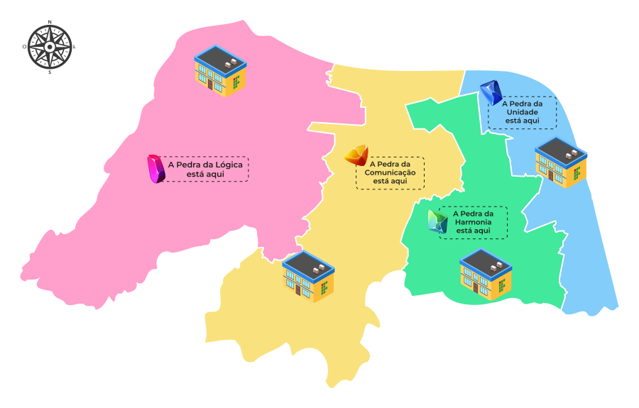
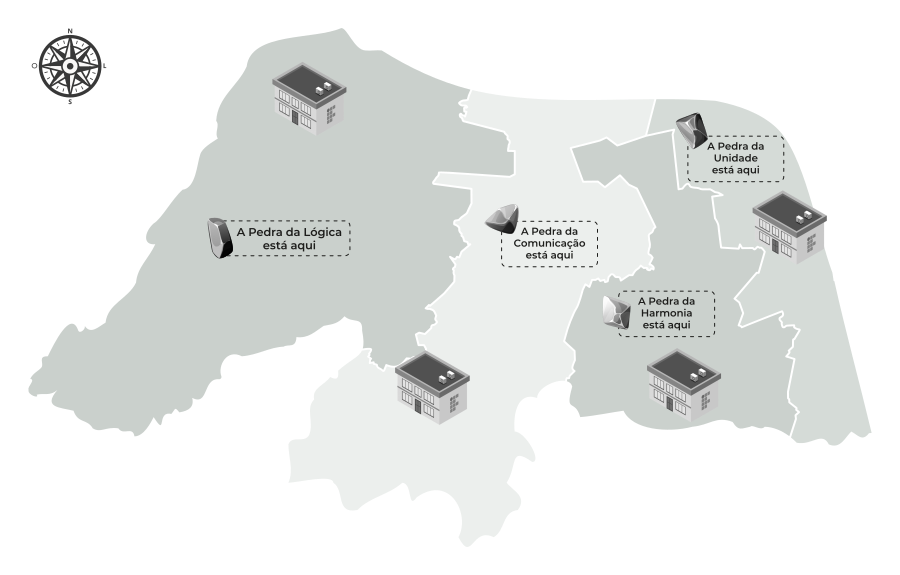
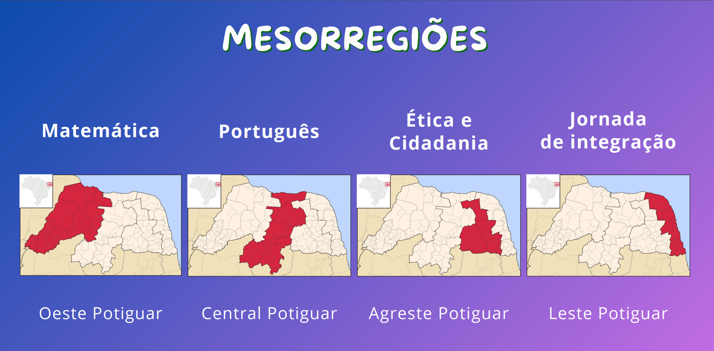

O Mapa ProITEC conecta a aprendizagem do aluno do 9º ano ao território do seu estado. Conforme ele estuda, novos polos e campi do IFRN são visitados no mapa!
Veja como o mapa ganha vida à medida que o aluno progride no curso:

Exibe os pontos visitados e concluídos pelas mesorregiões do RN.

Mostrado antes da liberação oficial da etapa pedagógica.

Mapeamento geográfico dos polos e campi do IFRN.
A jornada do estudante pelo mapa ocorre através de 3 cores intuitivas de marcadores:
O mapa dá ao aluno do 9º ano uma forte sensação de pertencimento ao IFRN! Ele percebe que seu esforço de estudo o aproxima geograficamente do campus do IFRN onde ele deseja ingressar no próximo ano.